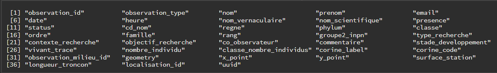
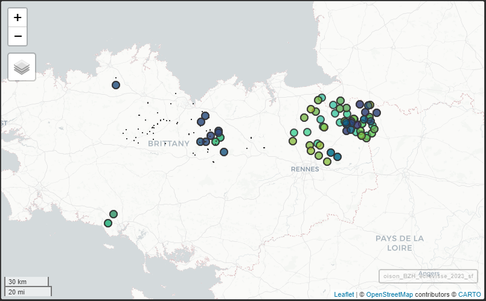

2. Comment utiliser le package oisonR ?
Source :vignettes/comment-utiliser-oisonR.Rmd
comment-utiliser-oisonR.RmdRécupérer les données via l’accès à la base SQL
Les observations taxons
Les observations taxons de OISON sont récupérables avec la
fonction get_table_taxon_sql(). Avant son utilisation, il
faut toutefois :
- s’assurer de disposer des paramètres de connexion à la base SQL
(cf. la vignette
oisonRpour plus de détails) ; - puis, initier la connexion à la base de données avec la fonction
start_sql_connexion().
La fonction permet de récupérer l’ensemble des observations de la
base, sauf si une géométrie est précisée en argument (argument
geometrie dans la fonction).
Après récupération des données, il est conseillé de stopper la
connexion à la base avec la fonction
stop_sql_connexion().
Exemple pour réaliser un export des observations taxons sur les écrevisses en Bretagne pour l’année 2023
1. Création d’une géométrie pour la Bretagne
Le package COGiter peut être utilisé pour récupérer la
géométrie correspondant à la région, et la convertir en chaîne de
caractères pour effectuer la requête.
geom_BZH <-
COGiter::regions_geo %>%
# filtre sur BZH
dplyr::filter(REG == 53) %>%
sf::st_as_sfc() %>%
# convert to text
sf::st_as_text()Le début de la géométrie prend la forme suivante : MULTIPOLYGON (((269637.9 6734259, 270864.3 6735502, 270508.8 6736507, 270517.1 6738116, 269527.2 673…..
2. Récupération des données observations taxons
# a) connexion
bdd_oison <- start_sql_connexion()
# b) requete
oison_BZH <-
get_table_taxon_sql(conn = bdd_oison,
geometrie = geom_BZH)
# d) stop de la connexion
stop_sql_connexion(conn = bdd_oison)Le résultat de la requête est un objet de type
data.frame. Les noms de colonnes peuvent être obtenus de la
façon suivante :

⚠️ A noter qu’ici les champs de données peuvent être différents de ceux présents dans les exports de l’application OISON* (i.e *champs manquants). Une vue simplifiée et facilement utilisable a été priviligée !
3. Filtrage des données
Pour extraire les observations taxons correspondant aux écrevisses
observées en 2023, il suffit de réaliser un filtrage à partir (i) de la
colonne nom_vernaculaire et (ii) de la nouvelle colonne
annee (créée à partir de la colonne date)
:
4. Visualisation des données
Pour une réutilisation en analyse spatiale, la colonne
geometry doit être convertie au format sf
(simple features) avec la fonction st_as_sf() du
package sf.
Avec cet objet, les visualisations interactives sont possibles (à
noter qu’il ne s’agit pas des vraies données dans l’exemple
ci-dessous… 🕶) avec le package mapview :

5. Export des données
L’export sous différents formats est possible, dont le format
geopackage .gpkg pour une réutilisation sous
SIG.
💡 Le format
gpkgpermet de conserver dans le même objet les différents types de géométries pouvant se retrouver dans OISON (points, polygones, lignes, …).
sf::write_sf(oison_BZH_ecrevisse_2023_sf,
"D:/oison_BZH_ecrevisse_2023.gpkg",
driver = "GPKG")